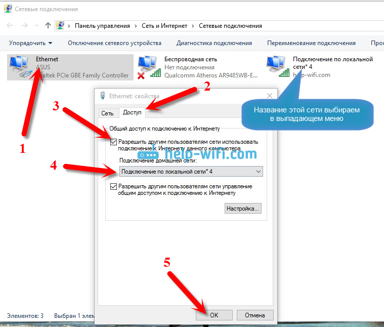

netsh wlan set hostednetwork mode=allow ssid="SSID" key="PASS" keyUsage=persistent // Создание сети
netsh wlan start hostednetwork // Запуск сети
netsh wlan stop hostednetwork // Остановка сети
Можно создать .bat файлы для более удобного управления
Если возникнет ошибка "Не удалось запустить размещенную сеть. Группа или ресурс не находятся в нужном состоянии для выполнения требуемой операции."
